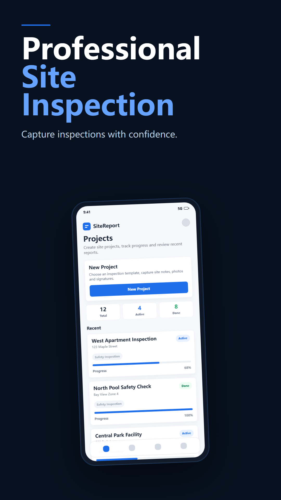
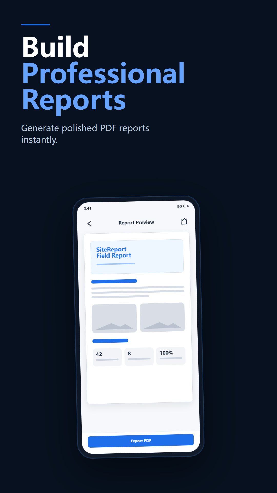
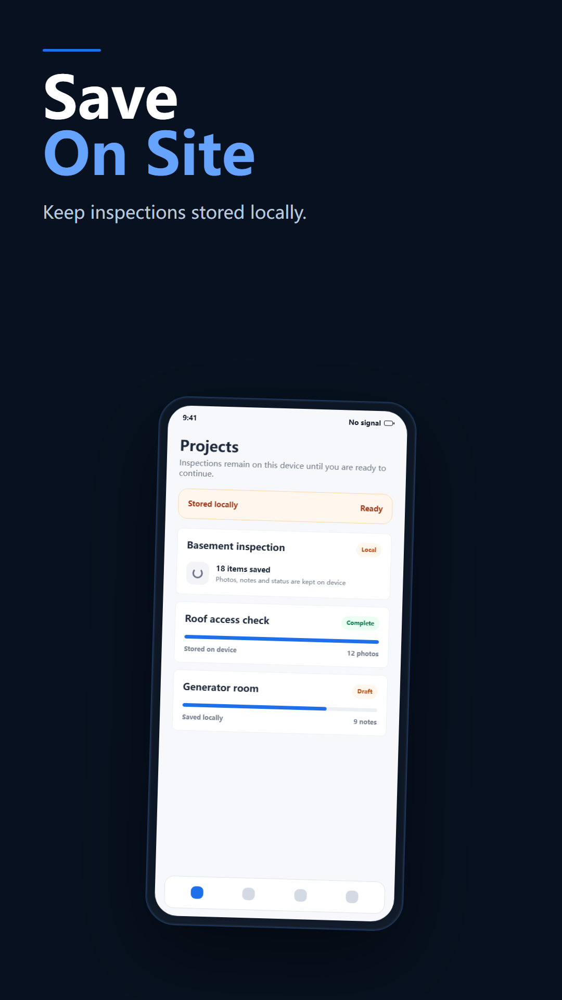
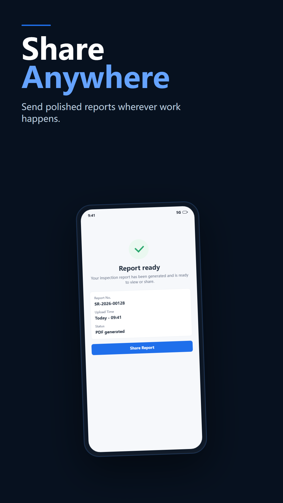
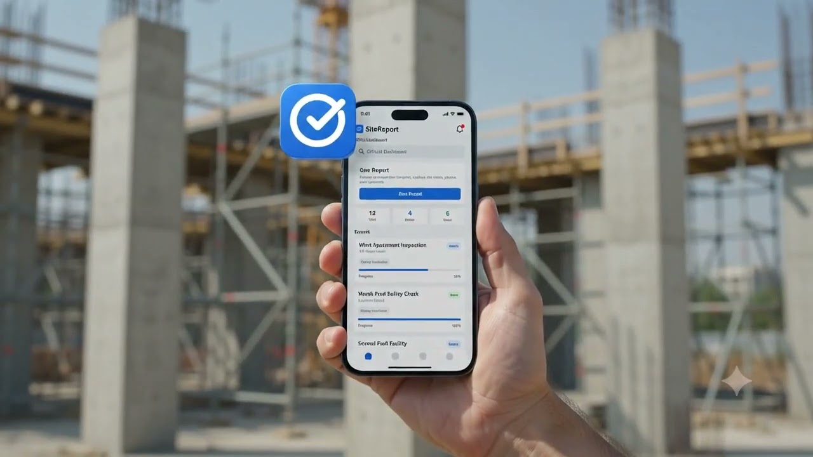

مشاريع الفحص
اجمع معلومات الموقع والتقدم والصور والتقارير في مكان واحد.
SiteReport Android
تقارير ميدانية جاهزة عندما تكون جاهزاً
سجّل الأدلة الميدانية وحوّل خطوات الفحص إلى تقرير قابل للمشاركة.


Plan the inspection, capture evidence in context, and deliver a clear report without moving between separate tools.
اجمع معلومات الموقع والتقدم والصور والتقارير في مكان واحد.
اربط الصور بالعناصر وسجّل الملاحظات والوقت والموقع عند توفرها.
أنشئ تقارير ميدانية منظمة من بيانات الفحص.
أدوات لتوثيق العمل الميداني وتنظيم الأدلة وتسليم التقارير.
اجمع معلومات الموقع والتقدم والصور والتقارير في مكان واحد.
Explore this featureاستخدم خططاً وقوالب قابلة لإعادة الاستخدام لتوحيد العمل.
Explore this featureاربط الصور بالعناصر وسجّل الملاحظات والوقت والموقع عند توفرها.
Explore this featureسجّل النتائج والتوصيات وبيانات التوقيع.
Explore this featureأنشئ تقارير ميدانية منظمة من بيانات الفحص.
Explore this featureصدّر الملفات وأرسلها إلى خادم تم إعداده.
Explore this featureشاشات حقيقية من المشروع الحالي.


تعرّف على طريقة تحويل SiteReport لأدلة الفحص الميداني إلى تقرير قابل للمشاركة.

نظّم المشاريع والأدلة والتقارير في سير عمل واحد.